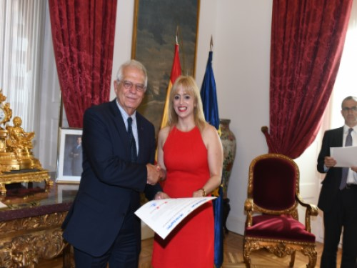

27/07/18 El Ministro de Asuntos Exteriores, Unión Europea y Cooperación, D. Josep Borrell, clausuró el 30º Programa Máster profesional en Unión Europea del Real Instituto de Estudios Europeos en el Salón de Embajadores del Ministerio y procedió a entregar a los integrantes de la promoción sus Certificados finales.
